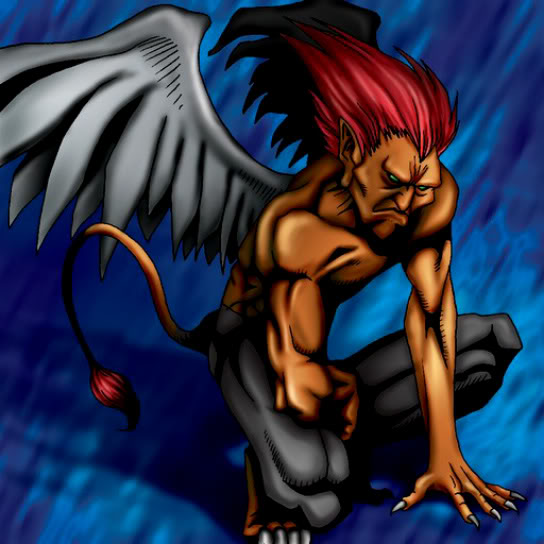

Garvas

STATS
ATK: 2000
DEF: 1700DECK COST
Deck Cost per Card: 37Fusion List (5 Possible Fusions)
- Garvas + Dissolverock = Flame Cerebrus
- Garvas + Fire Reaper = Flame Cerebrus
- Garvas + Firegrass = Flame Cerebrus
- Garvas + Flame Snake = Flame Cerebrus
- Garvas + Wings of Wicked Flame = Flame Cerebrus